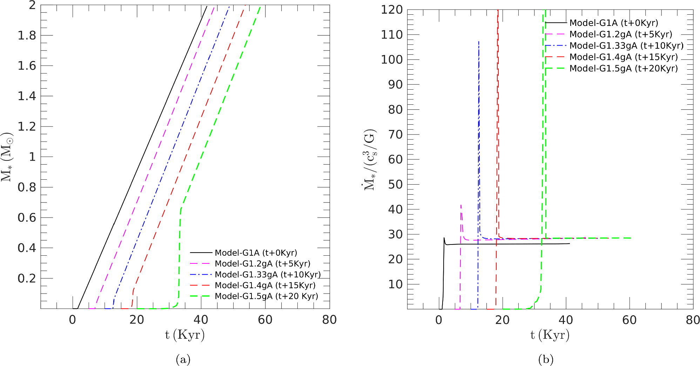

BIO
Welcome to my site! I appreciate your time in getting to know me.
I am Indrani, currently a postdoctoral researcher at the Academia Sinica Institute of Astronomy & Astrophysics (ASIAA) in Taipei, Taiwan.
My roots lie in Calcutta, India. I earned my Bachelor's degree in Physics from the Bethune College, University of Calcutta. Thereafter, I completed my Master's degree in Physics at the Indian Institute of Technology Kharagpur (IIT KGP), in India. Afterward, I moved to Canada to pursue my Ph.D. in Astrophysics, specifically in Star Formation, at the University of Western Ontario, in London, Canada.
I collaborate with researchers across the world to explore and grow research ideas.
Learning new things from my colleagues and collaborators around the globe has been a true privilege—an inspiring journey that greatly broadens my horizons.
My research interests span broadly in theoretical and computational astrophysics,
and aim specifically to understand how stars and planets form. My work focuses on the major open problems of star and planet formation physics,
such as the magnetized gravitational collapse of molecular cloud cores and the crucial role of the magnetic fields in this process.
I use cutting-edge magnetohydrodynamic (MHD) simulations and theoretical modelling to decipher the earlies stages of star formation, the evolution of protoplanetary disks around young stars, and prospects of first-generation planetesimal formation.
If you're interested, you can check out my research here.
I have a strong passion for continuous learning and growing, which naturally extends to my enthusiasm for public outreach and science communication. During my graduate studies at Western University in Canada, I had the rewarding experience of working as a graduate teaching assistant for both undergraduate and graduate-level physics and math courses—an opportunity that further strengthened my interest in teaching and mentoring.
My interest in pursuing Astrophysics & Astronomy was first sparked by the stunning images in the observational astronomy sections of science magazines. As I learned more, I discovered the deep connection between those visuals and the underlying mathematics and physics, which only deepened my fascination with the universe and captured my curiosity to led me to explore the fundamental question—how did the the stars and planets in our universe come to be?
Outside the lab, I consider myself an active person who enjoys engaging in playing badminton, exploring nature, diving into new experiences. I love spending time with my family.
My profession allows me to travel globally to attend scientific conferences, present my work, and exchange exciting ideas. As an avid traveler, I also enjoy exploring new places, local cultures, and delicious cuisines.
Please contact me, if you'd like to chat or have any questions.
My Research
My research interests focus on star and planet formation, with a particular emphasis on the earliest stages of star formation and the evolution of a protoplanetary disk aroung the young protostar.
I perform detailed nonideal magnetohydrodynamic (MHD) simulations of core collapse to understand the role of gravity, magnetic fields, and thermal pressure in the formation of protostars (pre-main sequence stars).
In addition, I also study long-term evolution of gas-dust magnetized protoplanetary disks to understand the accretion mechanisms of young stars—such as episodic outbursts—and the growth of dust grains.
These processes are central to the formation of first-generation planetesimals, the building blocks of planets.
I also study how molecular clouds undergo magnetized gravitational fragmentation to form dense prestellar cores—the birthsites of star formation.
My aim is to connect observations and theory of star-disk systems by exploring the underlying physics through theoretical and numerical modeling.
If you're interested, you can check out my publications here.
Science Keywords: Star formation, Planet formation, Magnetic fields, Nonideal MHD effects, Episodic accretion outbursts, Protoplanetary disks, Dust dynamics
Technical Keywords: Computational Astrophysics, MHD simulations, Astaroth GPU Code, Semi-analytical Modelling
Here I summarize the some of the key works that I have carried out with my collaborators.
1. How Does a Protostar Form though Magnetized Gravitaional Collapse?
Das, Shang, & Krasnopolsky, ApJ, 2025
The enigma of star formation in galaxies continues to captivate astronomers around the world, with a fundamental question remaining: how do self-gravity, magnetic fields, and thermal pressure play a role in protostar formation?
Our work reveals a constraint on the degree of non-isothermality in the choice of Equation of states (EOSs), that says a polytropic monoatomic index of Γ no stiffer than 4/3, complemented by the magnetized virial theorem,
ensures sufficient cooling in allowing a protostar to form and grow continuously through the magnetized gravitational collapse of interstellar molecular gas clouds. The global MHD collapse models with a Γ softer than or equal to 4/3,
the infall dynamics qualitatively follow the behaviour of the isothermal case. However, for the model collapse with a Γ harder than 4/3,
causes a reduction in the mass accretion rate into the central (point-mass like) protostar, thus delaying the collapse.
At the scales of protostar’s surface, which is likely several solar radii, the heating from the
accumulated material within may begin to significantly
influence the EOS by transitioning to the regime of
nonisothermality. However, this regime of nonisothermality
may remain confined to within the protostar’s surface only,
similar to the case of a chromosphere, and certainly does not
impede the mass infall during collapse.

2. Evolution of Protoplanetary Disks and Prospects of Planetesimal Formation
Das, Vorobyov, & Basu, ApJ, 2025
In this work, we investigated We investigate the occurrence of accretion bursts, dust accumulation, and the prospects for planetesimal formation
in a gravitationally unstable magnetized protoplanetary disk (PPD) with globally suppressed but episodically triggered magnetorotational instability (MRI),
particularly in young intermediate-mass stars (YIMSs) but with a comparison to its low-mass cousins.
Massive gas concentrations and dust rings form within the inner disk region owing to the radially varying efficiency of mass transport by gravitational instability.
These rings are initially susceptible to streaming instability (SI). The ensuing MRI bursts destroy the dust rings, making planetesimal formation via SI problematic.
In the later evolution phase, when the burst activity starts to diminish, SI becomes inefficient because of growing dust drift velocity and a more extended inner dead zone,
both acting to reduce the dust concentration below the threshold for the SI to develop. Low-mass objects appear to be less affected by these adverse effects.
Our results suggest that disks around YIMSs may be challenging environments for planetesimal formation via SI.
This may explain the dearth of planets around stars with M★ > 3M⊙.
3. Variation of the Core Lifetime and Fragmentation Scale in Molecular Clouds as an Indication of Ambipolar Diffusion
Das, Basu, & André, A&A Letters, 2021
Fragmentation in large molecular clouds probed by SMA, ALMA, VLA, JCMT, and Herschel has been of great interest in recent years.
In this work, we apply the magnetically (nonideal MHD) modulated threshold for fragmentation scale (length scale, time scale, and mass) to fit the data of the evolutionary time/lifetime and fragmentation mass of prestellar cores identified with Herschel Space Observatory in the Aquila cloud
as well as the number of enclosed cores formed in a parent clump measured in Perseus cloud complex with the Submillimeter Array (SMA).
By varying a single parameter, the normalized mass-to-flux ratio (lying in the range 1 ≤ μ ≤ 2), over the range of observationally measured densities,
we fit the range of prestellar core lifetimes that varies from 0.1 to a few Myr.
Moreover, we found the estimated lifetime is few times the free-fall toward the low density regime and essentially merges with the free-fall time toward the higher end of density.
This cannot be explained in a purely hydrodynamic scenario.
Stay tuned — more content is on the way!